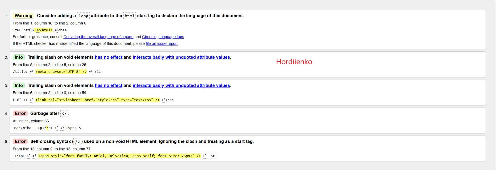
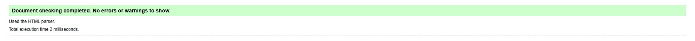

styl wpisany wielkosc 40 pikseli
styl wpisany wieloscia standardowa z uzyciem znacznika -->p/p>
styl wpisany wielkosc 25 pikseli
styl wpisany wieloscia standardowa-->span


Program (może być aplikacja Web, czyli strona WWW) sprawdzający poprawność dokumentu o określonej składni, np. walidator kodu HTML, walidator kodu CSS.
Pomyślne przejście walidacji oznacza zwykle, że kod został napisany zgodnie z gramatyką (składnią) danego języka.
Walidatory potrafią, wskazać miejsce błędu oraz podać przyczynę błędumogą podawać numer błędu.